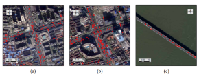
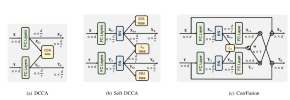
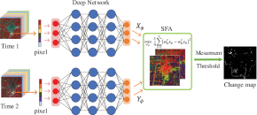

Lixiang Ru
|
|

简介
我目前是武汉大学 计算机学院的博士生. 我对一些弱监督的视觉问题感兴趣, 例如：弱监督图像分割.
教育经历
论文
|  | Chen Wu, Jingwen Yuan, Lixiang Ru, Hongruixuan Chen, Bo Du, Liangpei Zhang
A Measurement of Transportation Ban inside Wuhan on the COVID-19 Epidemic by Vehicle Detection in Remote Sensing Imagery arXiv:2006.16098 (arXiv), 2020. [论文] |
|  | Lixiang Ru, Bo Du, Chen Wu,
Multi-Temporal Scene Classification and Scene Change Detection with Correlation based Fusion IEEE Transactions on Image Processing (TIP), 2020. [论文] [代码] [数据集] |
|  | Bo Du, Lixiang Ru, Chen Wu, Liangpei Zhang,
Unsupervised Deep Slow Feature Analysis for Change Detection in Multi-Temporal Remote Sensing Images IEEE Transactions on Geoscience and Remote Sensing (TGRS), 2019. [论文] [代码] |
参加竞赛
- 2018.11 “航天天绘杯”高分应用解决方案大赛 排名 4/94;
- 2015.11 全国大学生数学竞赛 （湖北赛区）一等奖;
获奖情况
- 2020.11 易盛奖学金; 武汉大学;
- 2020.04 IEEE GRSS Transactions Prize Paper Award; IEEE GRSS学会;
- 2019.11 学业奖学金; 武汉大学;
- 2016.10 优秀学生奖学金; 武汉大学;
- 2016.10 国家励志奖学金; 武汉大学;
- 2015.10 优秀学生奖学金; 武汉大学;
- 2015.10 国家励志奖学金; 武汉大学;